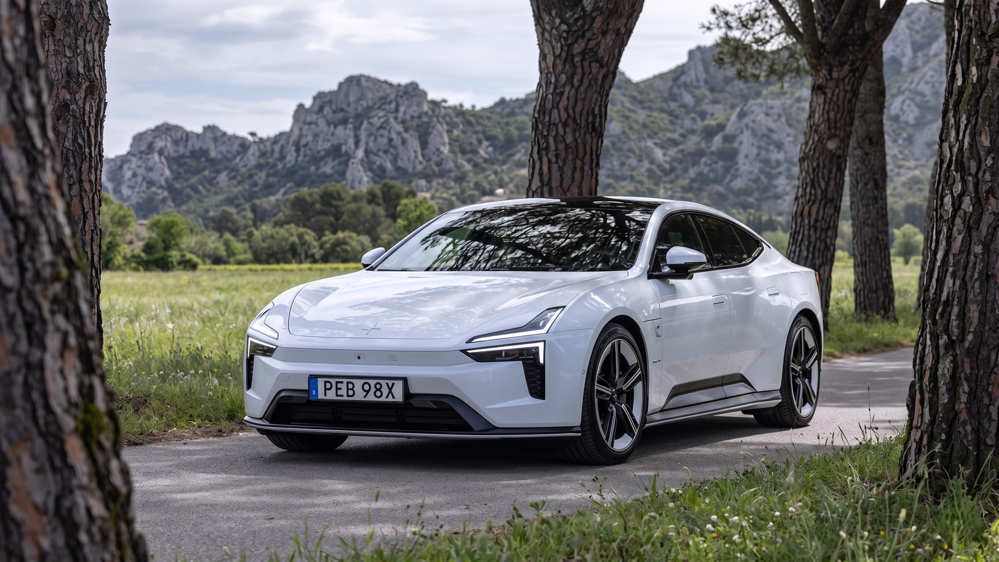

2026 Polestar 5 Review: More Power Than a Porsche Taycan Turbo at £89,500 — We Drove It on France's Route Napoléon


The numbers that open any conversation about the 2026 Polestar 5 are arresting enough on their own. 871 horsepower. 749 lb-ft of torque. A 0-60 mph time of 3.1 seconds. A 350kW DC charging system that adds roughly 100 miles of range every eight minutes. A bonded aluminum chassis where — genuinely — only 1% of the structure is held together by welding. And a starting price in the UK of £89,500 — less than a Porsche Taycan GTS, which produces 296 fewer horsepower in its standard configuration.
But the numbers are only the beginning of what makes the Polestar 5 interesting. Having driven it on France's Route Napoléon — one of Europe's most demanding and rewarding test roads — we can tell you that the car behind the spec sheet is even more impressive than the figures suggest. Polestar has spent years developing a platform shared with nothing else in the Geely Group, built around a manufacturing method borrowed from aerospace engineering, and produced by a relatively small British team at MIRA Technology Park in Nuneaton. The result is what several automotive publications are already calling one of the finest grand touring cars in the world — electric or otherwise.
Key Takeaways — 2026 Polestar 5
- Two variants: Dual Motor (737 hp, £89,500 UK / ~€120,000 EU) and Performance (871 hp, £104,900 UK / ~€143,000 EU)
- The Performance model produces 255 more horsepower than the £135,200 Porsche Taycan Turbo — at £30,000 less
- 350kW DC fast charging (800-volt architecture) achieves 10-80% in 22 minutes
- Bonded aluminum "Polestar Performance Architecture" — 1% welded, structural battery pack integral to chassis
- No traditional rear window — replaced by an 8.9-inch digital camera-fed display
- 13% recycled aluminum; 83% produced using renewable energy — sustainability built into the structure, not bolted on
- US availability not confirmed as of June 2026 due to tariff concerns
Table of Contents
- Full Specifications — Both Variants
- Design & Exterior — Fastback With a Bold Statement
- The Bonded Aluminum Chassis — Why 1% Welded Changes Everything
- 871 HP vs 737 HP — Which Variant to Choose?
- First Drive: France's Route Napoléon
- 350kW Charging & 800-Volt Battery — How Fast Is It Really?
- Interior — Scandinavian Minimalism With Premium Substance
- No Rear Window: Bold Idea or Practical Problem?
- Prices — UK, Europe, Australia & US Status
- Polestar 5 vs Porsche Taycan — Full Comparison Table
- Frequently Asked Questions
- Final Verdict
Full Specifications — Both Variants
⚡ 2026 Polestar 5 — Complete Specification Sheet
| Powertrain | Dual Motor AWD (both variants) |
| Dual Motor — Power | 737 hp (550 kW) / 599 lb-ft (812 Nm) |
| Performance — Power | 871 hp (650 kW) / 749 lb-ft (1,015 Nm) |
| 0-60 mph (Dual Motor) | 3.8 seconds |
| 0-60 mph (Performance) | 3.1 seconds |
| Top Speed (both) | 155 mph (250 km/h) — electronically limited |
| Battery | 112 kWh total / 106 kWh usable — NMC lithium-ion |
| Voltage Architecture | 800 volts |
| DC Fast Charging | 350 kW maximum |
| 10-80% Charge Time | ~22 minutes (at 350 kW) |
| AC Charging | 22 kW (three-phase) |
| WLTP Range (Dual Motor) | ~330 miles (530 km) |
| WLTP Range (Performance) | ~300 miles (480 km) |
| Platform | Polestar Performance Architecture (PPA) — bonded aluminum |
| Front Suspension | Compact double-wishbone |
| Dampers (Dual Motor) | Passive BWI dampers |
| Dampers (Performance) | MagneRide magnetorheological adaptive |
| Wheels | 20-22 inch — Michelin model-specific tyres |
| Infotainment | 14.5-inch portrait touchscreen (Google-based) |
| Driver Display | 9.0-inch instrument cluster |
| Head-Up Display | 9.3-inch |
| Digital Rear-View Mirror | 8.9-inch (camera-fed — no physical rear window) |
| Audio | Bowers & Wilkins premium sound system |
| Seating | 4+1 (two individual rear seats + optional centre) |
| Recycled Content | 13% recycled aluminum; 83% from renewable-energy smelters |
Design & Exterior — Fastback With a Bold Statement
The Polestar 5 is a four-door fastback — a long, low, sleek silhouette that sits considerably closer to the ground than an SUV and makes no apology for prioritising visual drama over boot-space practicality. The design is unmistakably Scandinavian: clean lines, an absence of fussy surfacing, and a coherent visual logic that runs from the pointed nose through to the steeply raked tailgate. It does not shout for attention in the way a Ferrari might, but it earns it — repeatedly, over the course of a day's driving, from the way light plays across its flanks and from the reaction of pedestrians, cyclists, and petrol-station attendants who ask about it without fail.
The aluminium body panels complement the aluminium structure beneath, keeping visual weight low. There are no chrome accents — instead, Polestar's "Swedish gold" interior accent colour adds a warm contrast to the cabin's cool grey and black surfaces. The flush door handles, integrated roof spoiler, and camera housing (in place of conventional door mirrors on some specifications) all contribute to aerodynamic efficiency that directly benefits the 300+ mile range figures.
The Bonded Aluminum Chassis — Why 1% Welded Changes Everything
The most technically consequential thing about the Polestar 5 is invisible to anyone looking at it from the outside. The Polestar Performance Architecture (PPA) is a hot-cured bonded aluminum structure where structural adhesive, rather than welding, holds 99% of the chassis together. Only 1% of the joins are welded — a figure so low it initially sounds like a boast rather than an engineering fact.
It is both. The engineering reality is that bonded joints are stiffer than welded ones because heat-affected zones in welding create localised softening of the metal. Adhesive bonding distributes load across the entire joint surface area rather than the discrete points of a weld bead. The result, according to Polestar, is torsional rigidity higher than a two-seat sports car or supercar — a claim that carsales.com.au, after driving on the demanding Route Napoléon, described as manifestly accurate: "The material is so stiff that the suspension can breathe without fighting structural flex. That created a fantastic base for the engineers to reduce compromises and widen the 5's dynamic bandwidth."
The 112 kWh battery is not bolted underneath the car as a separate module — it is integral to the floor structure, contributing to its own stiffness and keeping the centre of gravity as low as physics allows. This approach, similar to Tesla's structural battery concept but executed with a bonded aluminum rather than cast-metal architecture, is one of the engineering signatures of the PPA platform.
The 13% recycled aluminum and the 83% figure for aluminum produced by smelters using renewable electricity are not marketing footnotes — they are baked into the supply chain specifications Polestar mandated before a wheel was designed. This matters because a vehicle that is genuinely sustainable in its production process is substantially different from one whose sustainability claims begin at the tailpipe.
"The bonded aluminium platform provides a solid foundation unlike anything else in the EV segment. Every element of the chassis — from the double-wishbone front suspension to the rear motor mounting — works with the structure rather than despite it." — CarExpert, after the first full drive programme
871 HP vs 737 HP — Which Variant to Choose?
Both variants use dual electric motors — one driving the front axle, one the rear — for standard all-wheel drive. The difference in feel between them is not simply a matter of 134 additional horsepower.
The Dual Motor, at 737 hp and 599 lb-ft, uses passive BWI dampers. These are not the cheap, compromise dampers that populate the base models of most performance cars — they are the same excellent units found in the Polestar 3 single-motor, which impressed extensively with its ride and handling balance. The Dual Motor accelerates from 0-60 mph in 3.8 seconds. That is, to be clear, considerably faster than a standard Porsche 911 Carrera.
The Performance model adds 134 hp and 150 lb-ft, courtesy of a more powerful rear motor rated at 603 hp alone. It also upgrades the suspension to MagneRide — Delphi's magnetorheological adaptive damper system, which uses magnetically-controlled ferrous fluid to adjust damper stiffness in milliseconds based on road inputs and driver mode. The result is a system that can be genuinely soft for motorway cruising and genuinely firm for sustained cornering, without compromise in either direction. The Performance reaches 60 mph in 3.1 seconds.
First Drive: France's Route Napoléon
The Route Napoléon — the mountain road that traces the historical path of Napoleon Bonaparte's march from the coast to Paris in 1815 — is one of the most demanding test routes a car journalist can be given. It is long, it is varied, it throws tight hairpins, sweeping mountain passes, and long open straights at a car in rapid succession. It is the kind of road that exposes a chassis with any softness in its structure immediately.
The Polestar 5 felt, from the first corner, like a car that had been designed precisely for roads like this. The steering is weighted and communicative — genuinely informative about grip levels in a way that few electric vehicles manage, because so much of the feedback normally transmitted through the front wheels is masked by the weight of an electric powertrain. Not here. The front double-wishbone suspension, tucked tightly under the hood by Polestar's packaging, places the front wheels in an ideal geometry for corner entry. You feel exactly where the front end is loaded.
The body control is exemplary. Even over the rougher sections of the route — where road repairs have left uneven surfaces that betray the original mountain path beneath — the Polestar 5 does not pitch or wallow. The bonded platform's stiffness pays its most obvious dividend here: the suspension does exactly what the engineers designed it to do, without fighting chassis flex. The car finishes a sequence of three back-to-back hairpins at altitude with the same composure it had at the bottom.
And then there is the refinement. Electric cars are generally quiet, but the Polestar 5 is specifically, deliberately, impressively quiet. Acoustic side glass, careful aerodynamic management around the A-pillars and mirror housings (or camera pods), and excellent NVH (noise, vibration, harshness) management in the platform itself combine to create an interior that CarExpert described after a full day's driving as simply "incredibly quiet and refined." This is what makes the Polestar 5 a grand tourer rather than merely a quick EV: it is supremely comfortable to cover large distances in at speed.
350kW Charging & 800-Volt Battery — How Fast Is It Really?
The 350kW maximum DC charging speed is not a peak figure that appears briefly on a graph before the battery management system throttles it down. The 800-volt architecture allows the Polestar 5 to sustain very high charge rates for the majority of a charge session, because the higher voltage means lower current for the same power — and lower current means less heat, which is the primary reason most EVs have to reduce charging speed as the session progresses.
In practical terms: at a 350kW charger (currently found at many Ionity stations in Europe and a growing number of locations in the UK), the Polestar 5 charges from 10% to 80% in approximately 22 minutes. At a 150kW charger — the most common public fast-charger in the UK as of 2026 — the same 10-80% session takes approximately 45-50 minutes, limited by the charger rather than the car. On a home 22kW AC connection (three-phase, which requires a specialist installation), a full charge overnight is straightforward.
The 112 kWh (106 kWh usable) battery is integral to the car's structure, which means replacement in the event of serious damage would be a significant operation. Polestar has not published a detailed battery warranty for all markets yet, but the industry standard of 8 years / 100,000 miles at 70% capacity retention is the minimum expectation buyers should hold the brand to.
Interior — Scandinavian Minimalism With Premium Substance
Critics of the minimalist interior trend in luxury cars sometimes mistake simplicity for cheapness. The Polestar 5's cabin disproves this comprehensively. The materials are premium throughout — the seats were developed in collaboration with Recaro, one of the finest seat manufacturers in the world; "Swedish gold" accents in gold-toned metal provide a warm counterpoint to the cool greys and blacks of the main surfaces; and the fabrics include sustainable options including recycled content, consistent with the platform's broader environmental brief.
The screen arrangement is generous. The 14.5-inch portrait touchscreen uses Google Automotive software and is the central point for navigation (using Google Maps, the most consistently accurate mapping system available), climate control, driving modes, and media. It is responsive and logically laid out. The 9.0-inch driver display sits directly in front of the driver, and the 9.3-inch head-up display projects relevant information — speed, navigation turn-by-turn, driver assistance alerts — onto the windscreen without requiring eyes to leave the road. This three-screen approach, alongside the digital rear-view mirror, means the Polestar 5 is genuinely among the most technologically complete interiors in the segment.
The Bowers & Wilkins audio system — standard across both variants — delivers the kind of performance that justifies the system's reputation. The sound staging is wide, the bass is precise rather than boomy, and at motorway speeds the system maintains clarity without requiring the volume to be pushed into uncomfortable territory. It is an outstanding system.
The 4+1 seating configuration — two individually reclining rear bucket seats with a liftable central armrest that converts to a third rear seat when needed — is elegant and practical. Rear headroom is better than the sloping roofline suggests, and legroom behind a driver of average height is ample. The boot is smaller than a traditional saloon's, as the fastback roofline costs volume, but it is usable for regular life.
No Rear Window: Bold Idea or Practical Problem?
The Polestar 5 joins the Polestar 4 in offering no traditional rear window. Instead, a rear-facing camera feeds an 8.9-inch display mounted inside the car in the position a conventional mirror would occupy. This is a design decision, an aerodynamic decision, and a statement of intent — the cleaner roofline it enables contributes to the car's range and visual drama simultaneously.
In practice, adjustment takes perhaps 20 minutes of driving. The camera has a wider field of view than any conventional mirror, eliminates blind spots caused by headrests or large passengers, and works well in low light — better, in fact, than a conventional mirror when following headlights are glaring. The disadvantage is that it cannot be physically adjusted by feel, and in very bright sunlight some glare from the screen itself requires attention. Neither issue is serious.
Whether you find this genuinely preferable to a traditional mirror is a personal question. What is not in question is that it works — and for buyers who value the aerodynamic benefit and the distinctive interior presentation it enables, it is an easy trade.
Prices — UK, Europe, Australia & US Status
💷 2026 Polestar 5 — Pricing by Market
| UK — Dual Motor | £89,500 |
| UK — Performance | £104,900 |
| Europe — Dual Motor (approx.) | €120,000 |
| Europe — Performance (approx.) | €143,000 |
| Australia — Dual Motor Launch Edition | $186,249 drive-away (VIC) |
| Australia — Performance | $193,100+ ORC |
| United States | Not confirmed — KBB estimates ~$100,000 if launched |
The UK pricing is the headline that deserves emphasis. The Polestar 5 Dual Motor at £89,500 outguns the £118,200 Taycan GTS on horsepower (737 hp vs 590 hp in the GTS's standard configuration) by a significant margin. The Performance model at £104,900 outguns the £135,200 Taycan Turbo (616 hp) by 255 horsepower, at £30,300 less. These are not marginal advantages — they are category differences.
The US situation is frustrating for American buyers. Polestar previously withdrew the China-built Polestar 2 from the US market due to import tariffs. The Polestar 5 faces a different manufacturing situation — the car was developed in the UK and is currently being built in a single global facility — but the tariff environment and what Polestar has described as "tepid high-end EV demand" in America have led the company to delay confirming US availability. KBB estimates a US starting price of approximately $100,000 if and when it does arrive.
Polestar 5 vs Porsche Taycan vs Lucid Air — Full Comparison
| Specification | Polestar 5 Performance | Porsche Taycan Turbo | Lucid Air Grand Touring |
|---|---|---|---|
| Peak Power | 871 hp | 616 hp | 819 hp |
| Torque | 749 lb-ft | 627 lb-ft | 885 lb-ft |
| 0-60 mph | 3.1 sec | 3.3 sec | 3.0 sec |
| Top Speed | 155 mph | 161 mph | 168 mph |
| Battery | 112 kWh (106 usable) | 105 kWh | 112 kWh |
| Max DC Charging | 350 kW | 320 kW | 300 kW |
| 10-80% Charge | ~22 min | ~18 min | ~22 min |
| WLTP / EPA Range | ~300 miles | ~310 miles | ~516 miles (EPA) |
| UK Price | £104,900 | £135,200 | ~£95,000 (est.) |
| Chassis | Bonded aluminum (PPA) | Multi-material (steel/aluminum) | Aluminum space frame |
| Rear Window | None (digital mirror) | Yes | Yes |
| Dealer Network | Online + limited showrooms | Extensive global network | Limited US/EU network |
Frequently Asked Questions
How much horsepower does the 2026 Polestar 5 have?
The Dual Motor produces 737 hp and 599 lb-ft of torque (0-60 in 3.8 seconds). The Performance produces 871 hp and 749 lb-ft (0-60 in 3.1 seconds). Both use dual electric motors and all-wheel drive, and both are limited to 155 mph top speed. For comparison, the Porsche Taycan Turbo produces 616 hp.
What is the range of the 2026 Polestar 5?
WLTP estimates are approximately 330 miles for the Dual Motor and 300 miles for the Performance trim. EPA-cycle figures for the US market have not yet been published, but are expected to come in at 300+ miles for the Dual Motor based on the WLTP-to-EPA conversion pattern for comparable vehicles.
How fast does the Polestar 5 charge?
At a 350kW DC fast charger, the Polestar 5 charges from 10% to 80% in approximately 22 minutes. This is enabled by the 800-volt architecture, which keeps charging temperatures manageable at high power levels. At a more common 150kW charger, the same session takes approximately 45-50 minutes.
What is the Polestar 5 price in the UK?
The Dual Motor starts at £89,500. The Performance starts at £104,900. The Porsche Taycan GTS costs £118,200 and the Taycan Turbo costs £135,200 — the Polestar 5 undercuts both while offering more power in both cases.
Will the Polestar 5 be sold in the US?
As of June 2026, Polestar has not confirmed US pricing or availability. Tariff concerns and lower-than-expected high-end EV demand in America have led to the delay. If it does arrive, KBB estimates a starting price of approximately $100,000.
Does the Polestar 5 have a rear window?
No. The 2026 Polestar 5 uses a digital rear-view mirror — an 8.9-inch screen fed by a rear-facing camera — instead of a traditional rear window and mirror. This allows for a cleaner fastback roofline and better aerodynamics. It takes approximately 20 minutes of driving to become comfortable with, and the wider field of view is genuinely useful once adjusted to.
Final Verdict
TechVibe Verdict — 2026 Polestar 5
The Polestar 5 is a genuine landmark car. It is the most accomplished driving EV we have experienced since the Porsche Taycan redefined what electric performance could feel like — and in Performance specification, it out-powers the Taycan Turbo at a price point that makes the Porsche's pricing look difficult to justify. The bonded aluminum platform delivers handling that is precise, communicative, and deeply satisfying on demanding roads. The 350kW charging is among the fastest available in any production car. The interior is premium, sustainable, and technologically complete. The absence of a rear window is a genuine design statement that works in practice. The only meaningful caveat is US availability, which remains unconfirmed and leaves American buyers in an uncertain position. For UK and European buyers: this car is extraordinary. Seek out a test drive as soon as one becomes available in your area.
Rachel Wong
Senior Automotive Editor, TechVibe
Automotive journalist with 12 years of experience covering electric vehicles, performance cars, and emerging mobility technology. Has driven over 200 production EVs across four continents. Covered the Polestar 5 launch programme across France and the UK. Follow for ongoing coverage of the luxury EV market.
Leave a Comment